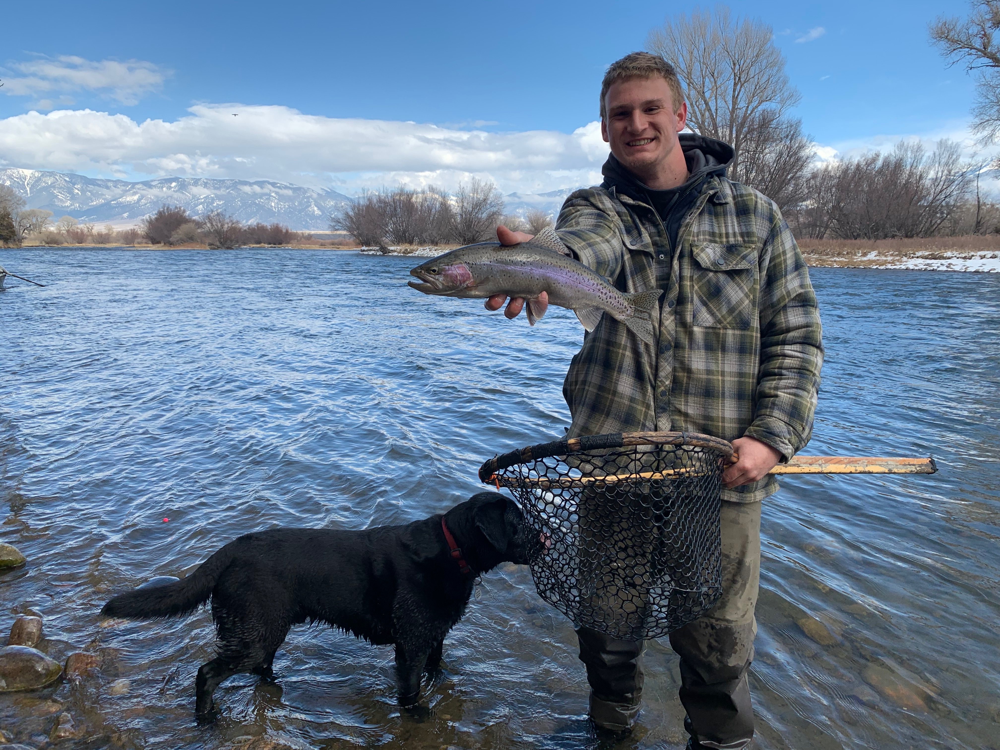

Shifty Rivers Fishing
Based out of Missoula, Montana, Shifty Rivers aims to help anglers
of all skill levels make the most out of their time on the water in
Western Montana. As licensed fly fishing guides, we consider Missoula
to be our home water. This website is full of guides favorite flies,
updated blog posts, links to various other websites with valuable
information, as well as tips and tricks.
